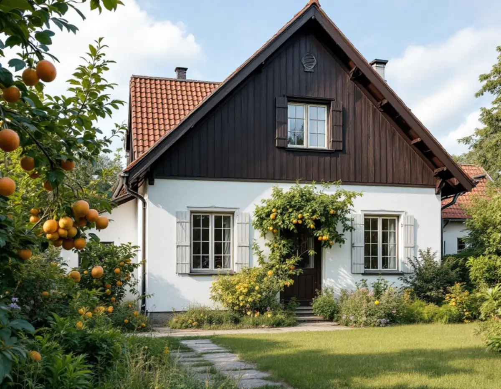
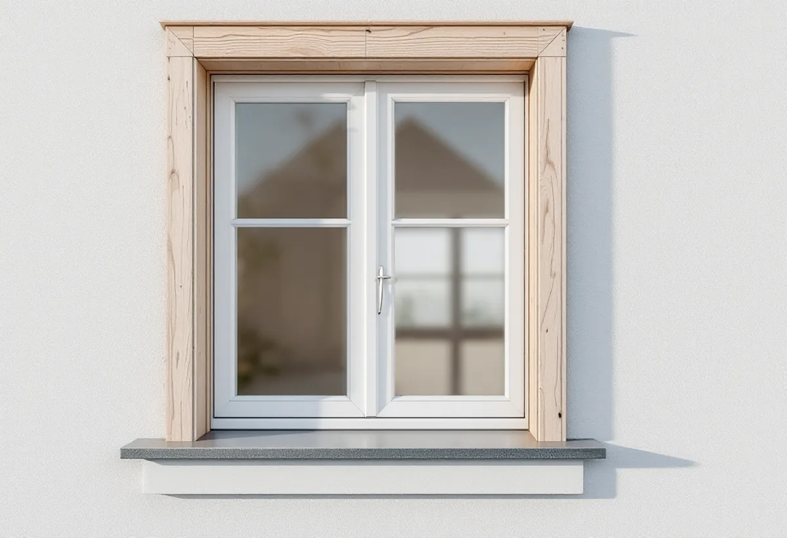
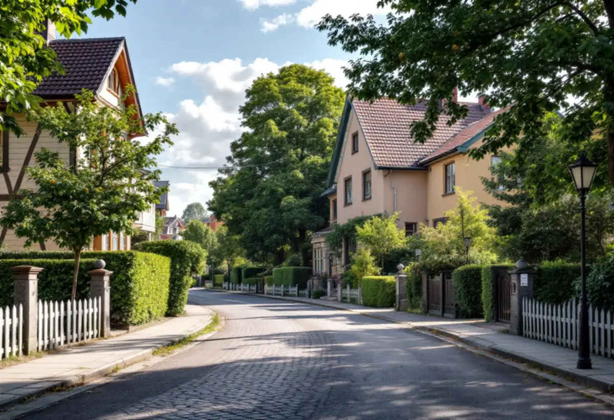

Platsbesök
Gratis besök där vi mäter fönstren och väggens tjocklek.
I Älvsjö villastad står många hus från 1910- och 1920-talen kvar, men de flesta har byggts om i flera omgångar. När fönster byts i samband med att fasaden tilläggsisoleras är det lätt att fönstret hamnar djupare i väggen än förut. Geal Entreprenad AB byter fönster i Älvsjö och planerar fönstrets läge innan fasaden byggs ut.

Stadsmuseets inventering av Älvsjö villastad berättar att fastighetsbolaget AB Hem på landet köpte två markområden från Älvsjö säteri 1908 och 1911, och att tomtförsäljningen började i december 1908. Omkring 1915 var uppåt hundra tomter bebyggda, ungefär hälften av alla i området. Villastaden fick tidigt vatten, avlopp och ordnade vägar, och en stadsplan fastställdes redan 1921.
Villorna var enligt inventeringen i allmänhet på två, tre eller fyra rum och kök, och ibland rymde husen flera lägenheter där den minsta var avsedd för uthyrning. Stadens vägledning Varsam utveckling av småhus- och villaområden markerar del av Älvsjö som kulturhistoriskt värdefull miljö med generösa byggrätter.

Inventeringen beskriver att en påfallande stor del av den äldsta bebyggelsen har bevarats, men att många fastigheter från 1910- och 1920-talen har byggts om eller till, ibland i flera omgångar, ofta så att den ursprungliga karaktären gått mer eller mindre förlorad. Nya fasad- och takmaterial, nya färgtyper och tilläggsisoleringar hade enligt inventeringen bidragit till utvecklingen, och endast ett tiotal av de äldre husen hade behållit sitt ursprungliga utseende så gott som helt.
Inventeringen är gjord efter 1977, och mycket har hänt sedan dess. Men frågan är densamma i dag: ett fönsterbyte är ett tillfälle att antingen ta huset närmare sitt ursprung eller att förändra det ytterligare. Vi visar båda vägarna på platsbesöket.
Stockholms stad räknar tilläggsisolering som en fasadändring. På stadens lista över ändringar av fönster finns dessutom exemplet att ett fönster flyttas från placering i fasadliv till att bli indraget från fasadlivet. Byggs väggen ut utan att fönstret flyttas ut med den hamnar fönstret längre in, och då ändras husets uttryck, med djupare smygar och större skuggor.
Vi planerar därför fönsterbytet och tilläggsisoleringen samtidigt. Antingen flyttas fönstret ut så att det behåller sitt läge i förhållande till fasaden, eller så väljer vi en lösning där karm, foder och bleck gör övergången så lik den gamla som möjligt. Hur fasaden i övrigt kan renoveras beskriver vi under fasadrenovering i Älvsjö.
För en- och tvåbostadshus krävs inte längre bygglov för fasadändringar om vissa förutsättningar är uppfyllda, skriver staden. Men om huset ligger i ett område som är utpekat som särskilt kulturhistoriskt värdefullt i översiktsplanen, visat med grön ring på Stadsmuseets karta, eller om huset är blå- eller grönmarkerat, krävs bygglov även för sådant som annars är lovfritt.
Vi tittar på kartan för ditt hus innan vi ritar något. Behövs lov tar vi fram fasadritning och beskrivning av fönster och fasad. Vill du hellre renovera de gamla fönstren finns mer under fönsterrenovering i Älvsjö.

Gratis besök där vi mäter fönstren och väggens tjocklek.
Vi kontrollerar Stadsmuseets klassning för huset.
Fönstrets läge bestäms tillsammans med fasaden.
Ritningar och beskrivning när lov krävs.
Fönstren sätts i rätt läge och tätas.
Foder, bleck och genomgång med dig.
I ett småhus räknar Skatteverket det som rotarbete att reparera eller byta ut fönster, att montera bullerglas och isolerglas och att byta fönsterbleck. Är bostaden yngre än fem år får arbetet bara återställa det ursprungliga skicket, och nytt material ska vara likvärdigt med det gamla.
Skatteverket ger också rotavdrag för tilläggsisolering i samband med ombyggnad, om huset är äldre än fem år och större delen av stommen behålls. Avdraget är högst 30 procent av arbetskostnaden och högst 50 000 kronor per person och år. Material och resor ger inget avdrag, och Geal drar avdraget direkt på fakturan.
Antal och storlek på fönstren, om de flyttas ut i samband med tilläggsisolering, indelning och spröjs, foder och bleck och om bygglovsunderlag behövs. Efter ett gratis platsbesök får du ett skriftligt kostnadsförslag.
Byta eller renovera fönster.
Fönsterbyte i Stockholm →Takbyte, takbesiktning och plåtarbeten.
Takläggare i Älvsjö →Långbro, Herrängen och Långsjö.
Takrenovering i Älvsjö →Villatomten, prickmarken och vattnet.
Attefallshus i Älvsjö →Villorna, träbjälklaget och golvvärmen.
Badrumsrenovering i Älvsjö →Byggrätt, gamla planer och planändring.
Byggföretag i Älvsjö →Puts nedtill, panel upptill.
Fasadmålning i Älvsjö →Villastad, nya grannhus och puts på trä.
Fasadrenovering i Älvsjö →Småspröjs och fönsterluckor.
Fönsterrenovering i Älvsjö →Golvvärme under trägolv i äldre villor.
Golvläggare i Älvsjö →Slipa och ge golvet en ny kulör.
Golvslipning i Älvsjö →Villastad, flerlägenhetsvillor och kök i lager.
Köksrenovering i Älvsjö →Villastad, egnahem och småstugor i Älvsjö.
Målare i Älvsjö →Plåttak för solceller, kupor och verandor i Älvsjö.
Plåtslagare i Älvsjö →Staket, grind och plank i villastaden.
Snickare i Älvsjö →Vinden, kupan och byggrätten.
Takbyte i Älvsjö →Bårder och dekor i villastaden.
Tapetsering i Älvsjö →Byggrätt, trädgårdssida och volym.
Tillbyggnad i Älvsjö →Villastaden, elen och köket.
Totalrenovering i Älvsjö →